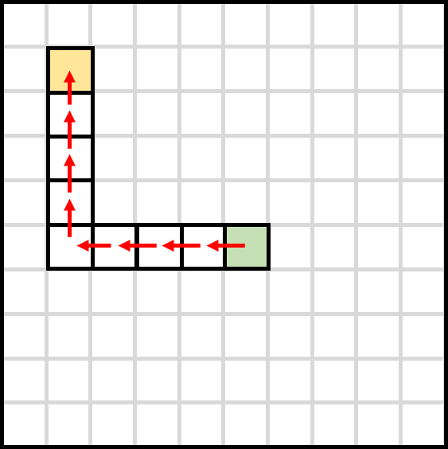
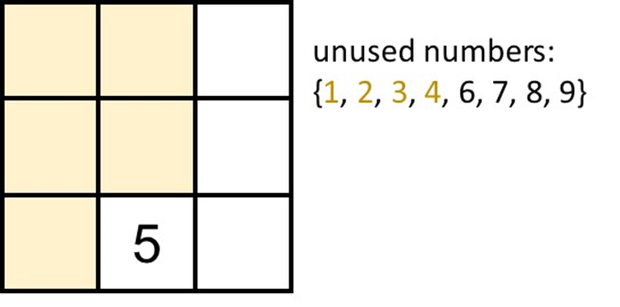
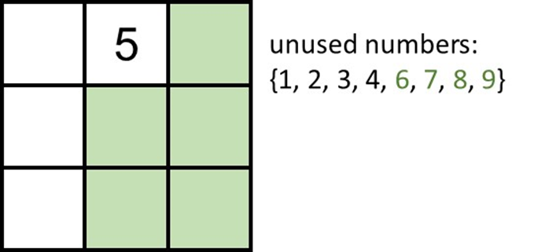
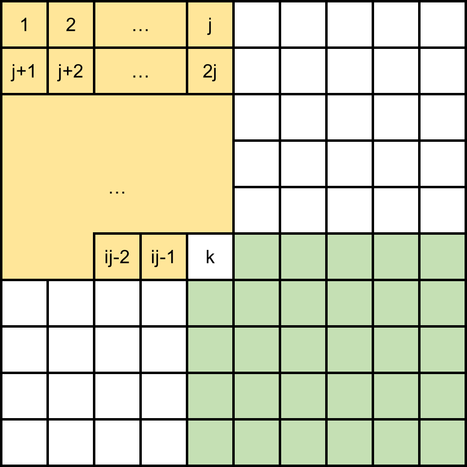
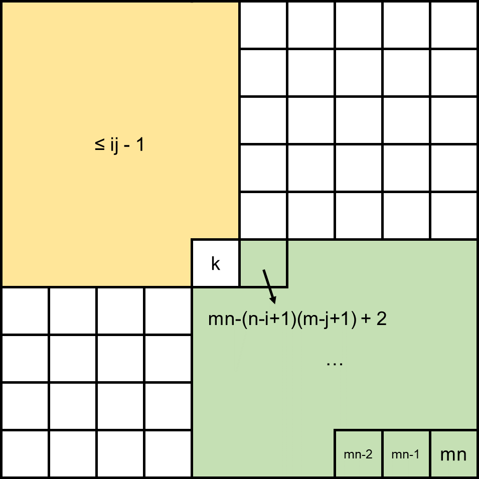
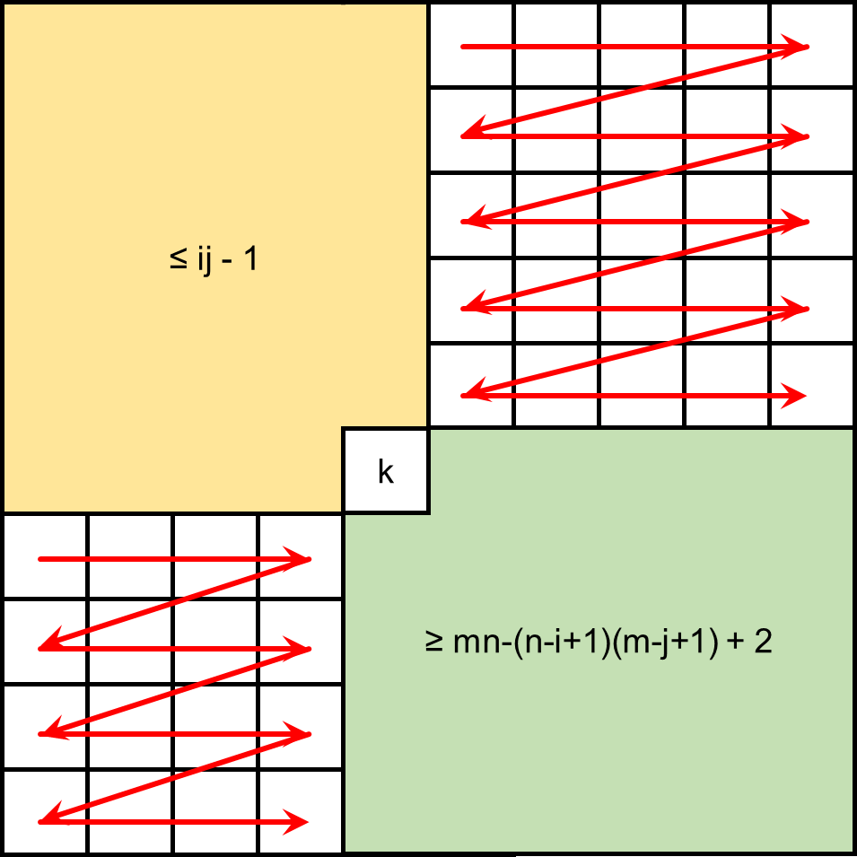

This problem is a simple problem that is intended to explain the concepts of floating point numbers. Although we stated that the absolute or relative error your answer needs to be within 10−6, using simple arithmetics and straightforward algorithms actually wouldn't result in errors greater than 10−6.
Then how could we solve the problem?
We provide a simple idea for solving it here:
Store all of the tax brackets and their respective rates in a pair<int, double> array.
For each income, find the bracket where the income lies in, and accumulate all income ranges before it.
Simply using an O(n) loop is enough, as the input size is not large.
There are two ways to maintain a sequence when iterating them over and over again and removing elements right after a particular iteration (in the tasks' case, when the professor signs the form). A straightforward idea is to treat the queuing students as like they're in a queue data structure, and push the leading element into the back of the queue if the potential pi is still positive. Another idea is to use a linked list to represent the students and erase the element once pi turns zero. One way moves the data, the other moves a pointer, while both are considered efficient enough, as they will iterate through the elements O(∑pi) times with every transition to the next element a constant time move.
But how do we keep track of the potentials and know when a student should leave the queue? One way would be to map a student ID to its potential. But since the std::map holds a query time complexity of O(logn), it might not be fast enough as ∑pi=107, thus anything slower than a linear solution may not work. Some may think of std::unordered_map or hash tables, but though the average time complexity of searching is O(1), the calculations still exceed the time limit.
A simple way would to put each students' potential pi alongside their IDs in an element (of the queue or list, whatever you might be using). Every time the student is iterated, decrease pi by 1. If pi turns zero, remove the element. Updating pi and removing referred elements are both constant time operations, so we will get O((∑pi)+n) as the time complexity over these operations.
With iterating the sequence and dealing with occurences taking O(∑pi) and O((∑pi)+n) repectively, the overall time complexity is O((∑pi)+n), with space complexity O(n) as each student stores their ID and potential.
As everyone of you have taken the Data Structures and Object-Oriented Programming course, we assume that you're familiar with the classic DS problem: Postfix.
It can be easily solved with a simple stack.
However, you might be stuck when you see this line:
Please output the answer modulo 109+7.
Or in other cases, you were pretty confused when you got WA for most of your submissions.
The reason why we made this rule is because rapidly and consecutively multiplying integers will result in an integer overflow pretty fast. For example: 109×109×109>263−1.
Applying modulo operations is the fix for this problem.
If you're not familiar in doing modulo operations, here is a link to a well-written wikipedia article: Modulo Operation
According to the problem statement, our goal is to find the maximum distance between two adjacent jubutsus whenever a new jubutsu is added. A simple idea is to keep track of the distances between each adjacent jubutsu, and by finding the largest distance and dividing the distance by 2, the answer could be obtained (where we can place a new shikigami). Two approaches are described below:
The most straightforward approach is to iterate through every jubutsu to find the maximum distance whenever a new jubutsu is added.
However, for each newly added jubutsu, it would take us O(k) time to search, where k is the total number of jubutsus at the moment. This algorithm would result in an O(1+2+3+⋯+n)=O(n2) time complexity, which is not efficient enough.
The main shortcoming of the straightfoward approach is how we maintain and search for the maximum distance. To reduce the search overhead, we can use containers such as std::map or other data structure that can sort dynamically in O(logn) or better, to keep track of the distances, where searching for the maximum value only requires O(logn) time. By using efficient data structures, we can reduce the total complexity from O(n2) to O(nlogn).
For students who are using std::set to maintain the adjacent distances, note that elements in std::set cannot have duplicates, you may refer to std::multiset if you are interested in using a set structure to solve the problem.
想像有一條線，從下方掃到上方，每當遇到一個點，就把它加入一個集合 S。為了方便，我們先假設所有點的 y 座標都不一樣。
要知道 (ℓ,r) 的右下角有沒有點，相當於是要知道 S 裡有沒有點的 x 座標比 ℓ 大，且 y 座標比 r 小。而當我們掃到一個點 (ℓ,r) 時，已經能知道這之前在 S 裡的點的 y 座標都比 r 小了。因此，如果我們能夠快速找到 S 中存不存在 x 座標 ≥ℓ 的點，就能知道 (ℓ,r) 是不是包含了其他點了。
請注意，我們並不需要知道 S 中有哪些點，只需要知道 S 中有沒有點的 x 座標比 ℓ 大就可以了。如果你看到這裡還打算把這些點存進 std::set 或一個一個檢查，請再重新看看上面的紅字。
If we regard ℓ as the x coordinate and r as the y coordinate, then each range can be seen as a point on a two-dimensional plane.
If range A contains range B, then A's x coordinate must be less than or equal to B's x coordinate, and A's y coordinate must be greater than or equal to B's y coordinate. We can express this relationship as follows:
Ax≤Bx<By≤Ay
In other words, "A contains B" ⟺ "B is located at the lower right of A."
Similarly, "A is contained by B" ⟺ "B is located at the upper left of A." Since the approach to both problems is the same (flipping the points by 180∘ is sufficient), we only need to solve one.
Imagine a line sweeping from bottom to top. Whenever it encounters a point, it adds it to a set S. For convenience, let's first assume all points have different y coordinates.
To know if there is a point at the bottom right of (ℓ,r), we need to check if there's a point in S whose x coordinate is greater than ℓ and whose y coordinate is less than r. And when we reach a point (ℓ,r) during the sweep, we already know that all points previously in S have y coordinates less than r. So, if we can quickly find if there exists a point in S with x coordinate ≥ℓ, we'll know if (ℓ,r) contains any other points.
Please note, we don't need to know which points are in S, we just need to know if there's a point in S whose x coordinate is larger than ℓ. If you still plan to store these points in a std::set or check them one by one, please revisit the sentence in red above.
Answer
Just use a variable to keep track of the largest x coordinate in S.
Now consider the case where "there are no duplicate points, but y coordinates may be the same." What order should we use to sweep over these points to make the above method work correctly?
Answer
If the y coordinates are the same, sort by x coordinates in descending order. This is because, with the same y, the one with a smaller x will contain the one with a larger x. So, we should add the one with a larger x to S first to make the judgment correctly.
Now consider the situation where "there are duplicate points." What order should we use to sweep these points to make the method above work correctly?
Answer
Regardless of the order, there will always be an issue: the first point swept won't be able to check other points.
However, by noticing that the answer for duplicate points will definitely be True, we can decide if this point's answer is True by checking if it is the same as the next point after sorting. If not, we then check the point with the maximum x coordinate in S.
Can you prove that all cases are considered (a.k.a. the correctness of the algorithm)?
Proof.
Observing the relationship between two points on the plane, we can divide it into three scenarios:
Different y coordinates.
Same y coordinates, different x coordinates.
Both x and y coordinates are the same.
These three scenarios cover all possible relationships between two points. The method above has addressed all these scenarios correctly, so all cases are considered.
What is the time complexity of this algorithm?
Proof.
The time complexity for sorting is O(nlogn), and the subsequent sweep line only checks each point O(1) times, so the overall time complexity is O(nlogn).
In this problem, you're presented with a table consisting of n×m blocks, where you need to insert n×mdistinct numbers. The following conditions must be met:
Each column is sorted. For every block (i,j) where i>1, the value of (i−1,j) is strictly less than (i,j).
Each row is sorted. For every block (i,j) where j>1, the value of (i,j−1) is strictly less than (i,j).
In essence, when the table is filled with numbers, it should conform to the constraints of a Young tableau.
The problem requires you to determine the sum of ∑1≤i≤n;1≤j≤mf(i,j), where f(i,j) represents whether a method exists to fill the table such that k is positioned at (i,j), with 1 signifying 'True' and 0 'False'.
Initially, we can identify a property that will assist us in resolving this problem for any filling method T:
a≤c∧b≤d⟹T(a,b)≤T(c,d)
For any two blocks (a,b) and (c,d), if block (a,b) is situated in the upper-left corner relative to (c,d), then the value of (a,b) should be less than or equal to (c,d).

Figure 1: (a,b) is at the upper-left conner of (c,d)
Let's analyze a simple case: (m,n,k)=(3,3,5), and consider what the answer might be.
Suppose we position k in a certain (i,j) and assess whether it's possible to fill the table under this circumstance.
(i,j)=(3,2)
After some try, you may discover that it's impossible to fill.
Because we found there's 5 blocks need to have a number smaller than 5, but we only have 4 distinct value smaller than 5.

Figure 2: (i,j)=(3,2)
(i,j)=(1,2)
Similar to the case above, it's impossible to find a fill method in this case.
Because there's 5 blocks need to have a number greater than 5, but we only have 4 distinct value greater then 5.

Figure 3: (i,j)=(1,2)
After experimenting, you might realize that filling is unfeasible in some scenarios because there are either too few numbers smaller or larger than k for the required blocks.
To generalize the observation, we contemplate a fixed (i,j) and recognize the constraints for the numbers surrounding it, ensuring there are enough smaller or larger numbers.
Upper-left conner of (i,j)
Blocks which value must smaller than T(i,j) is ij−1.
Numbers smaller than k is k−1.
Therefore, for k to be placed at (i,j), we must have k−1≥ij−1.
Bottom-right conner of (i,j)
Blocks which value must greater than T(i,j) is (n−i+1)(m−j+1)−1.
Numbers greater than k is mn−k.
Therefore, for k to be placed at (i,j), we must have mn−k≥(n−i+1)(m−j+1)−1.
After some try, you may find that we can only use these two inequalities to validate that number k can or can not be placed on (i,j). But is these two inequality really enough?
Let's consider a general way to fill when both inequality holds.
If both inequalities hold, a standard method for filling emerges, suggesting not to waste numbers and fill the upper left and bottom right corners first, followed by the remaining spaces.
Step 1
Step 2
Step 3
Step 1: fill the upper-left conner of (i,j) with [1,ij−1].
Step 2: fill the bottom-right conner of (i,j) with [mn−(n−i+1)(m−j+1)+2,mn]
Step 3: fill the remaining part with the remaining numbers.
Since both of the inequality holds, there must have enough numbers for Step 1 and Step 2 to fill in.
And since the remaining numbers is greater than ij−1 and is less than mn−(n−i+1)(m−j+1)+2,
there's no need to consider the border of left upper part (yellow part) and right bottom part (green part).
Only need to fill these numbers into remain part one by one.
For this subtask, we can traverse all blocks and employ the mentioned inequalities to validate each (i,j).
The time complexity here is O(mn), allowing us to score 30 points.
The subsequent strategy involves determining the answer for each row i by adjusting the inequalities slightly, thus finding the range of j for row i.
k−1≥ij−1⟹j≤ik⟹j≤⌊ik⌋
mn−k≥(n−i+1)(m−j+1)−1⟹j≥m+1−⌊n−i+1mn−k+1⌋
Since we only place the number inside the table, don't forget this condition:
1≤j≤m
Finally, combine all we can get our solution for row i by calculate the number of j:
max(1,m+1−⌊n−i+1mn−k+1⌋)≤j≤min(m,⌊ik⌋)
This adjustment reduces the time complexity to O(n), since m=n and mn≤1014, we know that n≤107, which is sufficient for scoring 50 points under the conditions of Subtask 2.
Since the time complexity is O(n), it might still get Time Limit Exceeded when n is large enough.
For example, when (n,m)=(1014,1).
However, we note a symmetry in the problem: the answer for (m,n,k)=(a,b,c) is identical to that for (m,n,k)=(b,a,c). Since mn≤1014, there's either m≤107 or n≤107.
This realization means we can swap m and n when m<n, ensuring that our solution's time complexity is now O(min(n,m)), which is adequate for achieving an Accepted verdict for this problem.
Using int will cause overflow in both Subtask 2 and 3, use long long instead.
Number of filling method is the nth number of m-dimension Catalan number, it's a very large number. Consequently, even with substantial pruning, calculating these directly would be prohibitively slow for this problem.
#include <iostream>
using namespace std;
int main()
{
long long n, m, k, ans = 0;
cin >> n >> m >> k;
if (n > m) swap(n, m);
for (int i = 1; i <= n; i++){
ans += min(m, k / i) - max(1LL, (m + 1 - (m * n - k + 1) / (n - i + 1))) + 1;
}
cout << ans << '\n';
return 0;
}
有一個上凸包 C={(0,y0),(1,y1),…,(L,yL)}，你每次可以透過 query(m) 詢問一個整數斜率 m，而你會得到該斜率切到 C 的切點座標 (x,y)。
你至多只能問 32 次，請求出 x 座標為 k 時對應的 yk 是多少。
You are given an upper convex hull C={(0,y0),(1,y1),…,(L,yL)}. Each time, you can use query(m) to ask about a tangent with an integer slope m, and you will receive the coordinates (x,y) of the tangent point on C.
You can ask at most 32 times, and you need to find out what yk is when the x coordinate is k.
1≤t≤20.
2≤L≤10000.
1≤k≤L−1.
1≤y[i]≤109 for i=1,2,…,L−1.
y[0]=y[L]=0.
Points {(0,y[0]),(1,y[1]),…,(L,y[L])} form an upper convex hull.
// [lo, hi] is used to maintain the range of possible slopes
int lo = -1'000'000'000, hi = 1'000'000'000, mi;
// If we can't squeeze the answer within [m, m], keep squeezing!
while (lo != hi) {
mi = lo + (hi - lo) / 2;
auto [x, y] = query(mi);
if (x == k) return y;
if (x < k) hi = mi;
else lo = mi + 1;
}
// lo should be the tangent slope at (k, y[k])
auto [x, y] = query(lo);
return y;
詢問次數最壞情況下為 ⌈log2(109−(−109))⌉+1=32 次。
要特別注意的是，由於同一條切線同時切到多個切點時，會回傳最左邊的點，所以若要找的點 k 在你查到的點 x 右邊，這兩個點是有可能有相同的斜率的。此時我們應該在縮小斜率的範圍時，把這個可能給保留下來，這也是 hi = mi 而不是 hi = mi - 1 的原因；反之，若點 k 在點 x 左邊，可以保證這兩個點一定有不同的斜率，而這也是使用 lo = mi + 1 而不是 lo = mi 的原因。
實作二分搜時要小心的就是迴圈無法達到終止條件，陷入無窮迴圈。以下是發生這種情況的可能原因：
都使用 lo = mi, hi = mi
在這題中，雖然你也可以使用 lo = mi（仍然有包到答案），但這麼做將可能使二分搜在接近邊界條件時仍然停不下來。
假設目前二分搜的斜率範圍位在 [lo, lo + 1]，且 lo 並不是點 k 的切線斜率，那麼使用斜率 mi = lo 將會查到點 k 左邊的點。
觸發 lo = mi 的條件，搜尋範圍仍然為 [lo, lo + 1]；若正確使用 lo = mi + 1，搜尋範圍會變成 [lo + 1, lo + 1]，達成終止條件。
選擇錯誤的中點
對於區間 [lo, hi]，至多有兩個可以挑選的中點：
mi=⌊(lo+hi)/2⌋
mi=⌈(lo+hi)/2⌉
當使用 mi=⌊(lo+hi)/2⌋ 時，若二分搜裡面縮小範圍的式子是 lo = mi, hi = mi - 1，在搜尋範圍為 [lo, lo + 1] 的情況時，出現 lo = mi 的 case 時範圍仍是 [lo, lo + 1]，陷入無窮迴圈。
當使用 mi=⌈(lo+hi)/2⌉ 時，若二分搜裡面縮小範圍的式子是 lo = mi + 1, hi = mi，在搜尋範圍為 [lo, lo + 1] 的情況時，出現 hi = mi 的 case 時範圍仍是 [lo, lo + 1]，陷入無窮迴圈。
本題目是屬於 lo = mi + 1, hi = mi 的 case，那麼使用 mi = (lo + hi) / 2 的式子計算出的中點會有什麼問題呢？要注意到在 C++ 的整數運算中，一個負數 n 除以 2 的結果會是 ⌈2n⌉（e.g. (-15) / 2 = -7），那使用 mi = (lo + hi) / 2 在 lo + hi 是負奇數時會發生無窮迴圈的狀況。
使用位元運算 mi = (lo + hi) >> 1 可以保證都是計算出 mi=⌊(lo+hi)/2⌋；位元運算 mi = (lo + hi + 1) >> 1 可以保證都是計算出 mi=⌈(lo+hi)/2⌉。
使用 mi = lo + (hi - lo) / 2 也可以保證在 lo≤hi 時都是計算出 mi=⌊(lo+hi)/2⌋。
The upper convex polygon has several nice properties, such as:
From left to right, the slope of each edge shows a decreasing trend.
For each point on the upper convex polygon, although there are infinitely many tangents that can pass through it, note that the slopes of these tangents are bounded by the slopes of the adjacent sides of the point.
Combining the above two points, we can find that the slope of the tangents for each point will show a decreasing trend from left to right.
When you query with a tangent slope m and receive a result (x,y), you can make the following inferences:
x=k; then you've found the y you need!
x<k; unfortunately, but since you know point k is on the right, you should use a smaller m to query point k.
x>k; conversely, you should use a larger m to query point k.
We can adjust the slope to make the tangent we query approach the point required by the problem. Theoretically, as we get closer to (k,y[k]), the slope we use will be closer to the slope of the tangent passing through (k,y[k]).
Because the slope of the tangents only appears between [−109,109], and we can only query 32 times, trying each slope one by one definitely won't grant you AC. Therefore, we need to use the inferences mentioned above to quickly narrow down the range of tangent slopes and thereby lock the tangent point on k.
If we want to minimize the range of slopes as much as possible with a single query, what should we ask? Asking too close to the edge often makes it impossible to narrow down the range; always asking about the midpoint of a range ensures that the range is reduced by half each time!
// [lo, hi] is used to maintain the range of possible slopes
int lo = -1'000'000'000, hi = 1'000'000'000, mi;
// If we can't squeeze the answer within [m, m], keep squeezing!
while (lo != hi) {
mi = lo + (hi - lo) / 2;
auto [x, y] = query(mi);
if (x == k) return y;
if (x < k) hi = mi;
else lo = mi + 1;
}
// lo should be the tangent slope at (k, y[k])
auto [x, y] = query(lo);
return y;
The worst-case number of queries is ⌈log2(109−(−109))⌉+1=32 times.
It's important to note that when the same tangent line touches multiple points, it returns the farthest left point. So, if the point k you're looking for is to the right of the point x you found, these two points might have the same slope. In this case, when narrowing down the range of slopes, we should keep this possibility, which is why we use hi = mi instead of hi = mi - 1. Conversely, if point k is to the left of point x, these two points definitely have different slopes, and that's why we use lo = mi + 1 instead of lo = mi.
When implementing binary search, you have to be careful that the loop can reach the termination condition without falling into an infinite loop. Here are some possible reasons for such a situation:
Using both lo = mi, hi = mi:
In this problem, although you could use lo = mi (still covering the answer), doing so could potentially cause the binary search to keep running when close to boundary conditions.
Suppose the current range of slopes in the binary search is [lo, lo + 1], and lo is not the tangent slope of point k. Then, using the slope mi = lo will query a point to the left of point k.
Triggering the lo = mi condition keeps the search range as [lo, lo + 1]. If you correctly use lo = mi + 1, the search range would become [lo + 1, lo + 1], meeting the termination condition.
Choosing the wrong midpoint:
For the interval [lo, hi], there are at most two midpoints you can choose:
mi=⌊(lo+hi)/2⌋
mi=⌈(lo+hi)/2⌉
When using mi=⌊(lo+hi)/2⌋, if the formula inside the binary search for reducing the range is lo = mi, hi = mi - 1, and the search range is [lo, lo + 1], the occurrence of the lo = mi case keeps the range as [lo, lo + 1], falling into an infinite loop.
When using mi=⌈(lo+hi)/2⌉, if the formula inside the binary search for reducing the range is lo = mi + 1, hi = mi, and the search range is [lo, lo + 1], the occurrence of the hi = mi case keeps the range as [lo, lo + 1], falling into an infinite loop.
This problem belongs to the lo = mi + 1, hi = mi case, so what would be the issue with using the formula mi = (lo + hi) / 2 for calculating the midpoint? It's important to note that in C++ integer operations, a negative number n divided by 2 would result in ⌈2n⌉ (e.g., (-15) / 2 = -7). So, using mi = (lo + hi) / 2 when lo + hi is an odd negative would lead to an infinite loop.
Using the bitwise operation mi = (lo + hi) >> 1 ensures that it always calculates mi=⌊(lo+hi)/2⌋; the bitwise operation mi = (lo + hi + 1) >> 1 ensures that it always calculates mi=⌈(lo+hi)/2⌉.
Using mi = lo + (hi - lo) / 2 will also ensure that mi=⌊(lo+hi)/2⌋ if lo≤hi.
In situations where three points lie on the same line, the point k you're looking for might be on the same tangent line as other points. We assume that among the points that share a tangent line with point k, the one farthest to the left has coordinates (ℓ,y[ℓ]), and the slope of the tangent line is m.
If you directly use the program mentioned above on the test data described, the final point you find will not be the answer, but rather (ℓ,y[ℓ]).
On a two-dimensional plane, you only need one point on the line (ℓ,y[ℓ]) and the slope of the line m to uniquely determine the equation of the line:
y−y[ℓ]=m(x−ℓ)
Since (k,y[k]) is also on the line, it can be substituted into the equation, maintaining equality:
At the end of a binary search with both ends closed (left-closed and right-closed), even though it ensures lo=hi, mi (the middle point) could potentially be lo or lo−1.
Similarly, using the last round of queries in a binary search doesn't guarantee that what's being queried is lo. This means that relying on the value of mi in the final iteration might lead to incorrect results, as it might not reflect the exact point where the condition changes (which is what we are often looking for in a binary search).
This common oversight occurs because programmers might assume the middle value reflects the current low or high bound at the end of the binary search, but that's not always the case. Care needs to be taken to use the correct bounds in the condition checking and when finalizing the result of the binary search.
#include "1612.h"
int convex_hull(int L, int k) {
int lo = -1'000'000'000, hi = 1'000'000'000, mi;
while (lo < hi) {
mi = (lo + hi) >> 1;
auto [x, y] = query(mi);
if (x == k) return y;
if (x < k) hi = mi;
else lo = mi + 1;
}
auto [x, y] = query(lo);
return y + (k - x) * lo;
}
Suppose we do not make operations between position n−1 and 0, then there is only one option to make a0 become zero, which is increase position 0 by −a0, and decrease position 1 by −a0.
After that, there is still only one option to make a1 become zero, and so on. Thus in this case the answer can be uniquely determined.
If we define array b as the prefix sum array of a where bi=∑0≤j≤iaj, we have the answer:
Now, consider we move x from position n−1 to 0, which is a0′=a0+x and an−1′=an−1−x, the prefix sum array will change to bi′=bi+x for 0≤i≤n−2, while the last item bn−1′=bn−1=0 stays unchanged.
Note that wn−1=0, so the answer won’t change even if we change bn−1 to any arbitrary number.
Define f(x) be the answer if we move x from position n−1 to 0 (e.g. the above formula is f(0)), we can calculate f(x) as follows:
f(x)=0≤i≤n−1∑∣bi+x∣⋅wi
Since the function fi(x)=∣bi+x∣⋅wi is (non-strictly) convex function, and the summation of convex functions is still convex, we have yielded that f(x) is convex. Using tenary search is enough to pass and get AC.
Time Complexity: O(nlog(nC)), where C=1000 is the maximum value of ai.
There are wi people on coordinate bi, find a position x that minimize the sum of distances to every person.
Proof.
The sum of distances is ∑∣bi−x∣⋅wi, which is exactly f(−x).
For any position x that has more people on the left (denoted as pL) than on the right (denoted as pR), moving left by 1 will make the sum decreases by pL−pR. Vice versa, if pL<pR, then moving right will always be better. It is easy to see that the optimal position x is the median of these people.
Thus, if we sort (bi,wi) by increasing bi, and calculate the position of the weighted median, we can get the optimal x without any call to f(⋅), and get AC with only one call to f(−x).
Actually, we don’t have to sort (bi,wi) if we only need the median. Recall "Quick Select" which let you get kth largest element in just O(n) time, if we use it together with binary search on the array, we would yield a T(n)=T(n/2)+O(n), which is an O(n) solution!
Let f(a) represent the damage received when assistance is a. It is observed that as a increases, the damage incurred each time decreases, so f(a) is non-strictly decreasing.
Because f(a) is monotonic, we can use binary search on the answer to check the minimum a for which f(a)<we.
Naïve Battle Simulation (Time Limit Exceeded)
int wd, we, wp, sd, se, sp, a;
sd += gcd(wp, sp);
se += gcd(wp, sp);
while (we > 0 and se > 0) {
se -= wd;
if (se <= 0) break;
int dmg = max(sd - a, 0);
we -= dmg;
if (a > 0) --a;
}
if (we > 0) { /* warrior wins */ }
else { /* warrior loses */ }
Battle Simulation in O(1)
bool battle(int wd, int we, int sd, int se, int a) {
int get_hit = (se - 1) / wd;
if (a >= get_hit) {
/// sd - a, sd - a + 1, ..., sd - a + get_hit - 1 ///
we -= sum(max(sd - a, 0), max(sd - a + get_hit - 1, 0));
a -= get_hit, get_hit = 0;
}
else if (a) {
/// sd - a, sd - a + 1, ..., sd - 1 ///
we -= sum(max(sd - a, 0), max(sd - 1, 0));
get_hit -= a, a = 0;
}
we -= get_hit * sd;
return (we > 0); /// 'True' if warrior wins
}
battle(wd, we, sd + gcd(wp, sp), se + gcd(wp, sp), a);
Now, what we are looking for is the max(a0,a1,…,an−1) when ai:=minfi(a)<weargfi(a), so we can search for a and check whether all the fi satisfy the conditions.
Since each ai's answer is independent of the others, we can search for them separately and then take the max.
If you recompute gcd(wp[i],sp[j]) each time, it's very likely going to cause a timeout, so pre-processing can be done:
Enumerate (i,j) for preprocessing, which requires O(nk) operations.
Enumerate (x,y) (for value domains) for preprocessing, which requires O(C2) operations (where C=1000). This method is more recommended.
Given the inorder and postorder traversal sequences of a binary tree, along with the weights of each node on the tree.
Please find the total sum of weights of the leaf nodes.
Prerequisite Knowledge: Given any two of the preorder, inorder, and postorder traversals, a unique binary tree can be reconstructed.
When we need to reconstruct a binary tree, we can use the inorder and postorder traversal sequences to achieve this.
Inorder traversal follows the order of "left subtree - root node - right subtree," and it helps us determine the relative positions of nodes in the tree.
Postorder traversal follows the order of "left subtree - right subtree - root node." Therefore, the last node in the postorder traversal sequence is the root node of the tree.
Based on these characteristics, we can reconstruct the binary tree recursively using the following steps:
Take the last node from the postorder traversal, which becomes the root node of the tree.
Find the position of the root node in the inorder traversal, allowing us to determine the number of nodes in the left subtree and the right subtree.
Create a tree node and set its weight as the weight of the root node. Divide the inorder traversal using index mapping and recursively process the left subtree and right subtree.
Repeat the above steps until all nodes have been processed, and the tree is completely reconstructed.
Sample Code
int tree(int l, int r, int l2, int r2) {
if(r < l) return -1;
int root = post[r2];
int rootid = pos[root];
left__[root] = tree(l, rootid-1, l2, l2-l+rootid-1);
right__[root] = tree(rootid+1, r, r2-r+rootid, r2-1);
return root;
}
// Index mapping
for(int i = 0; i < n; i++) pos[in[i]] = i;
// Construct tree
tree(0, n-1, 0, n-1);
Additionally, you can determine whether a node is a leaf node while constructing the binary tree. This approach reduces the need for repeated traversals.
During the process of reconstructing the binary tree, when creating each node, we can simultaneously check whether it is a leaf node. If a node has no left child and right child, it is a leaf node. In this case, we can calculate and store its weight.
Sample Code
int tree(int l, int r, int l2, int r2) {
if(r < l) return -1;
int root = post[r2];
int rootid = pos[root];
int lval = tree(l, rootid-1, l2, l2-l+rootid-1);
int rval = tree(rootid+1, r, r2-r+rootid, r2-1);
if (lval == -1 && rval == -1) sum += b[root];
return root;
}